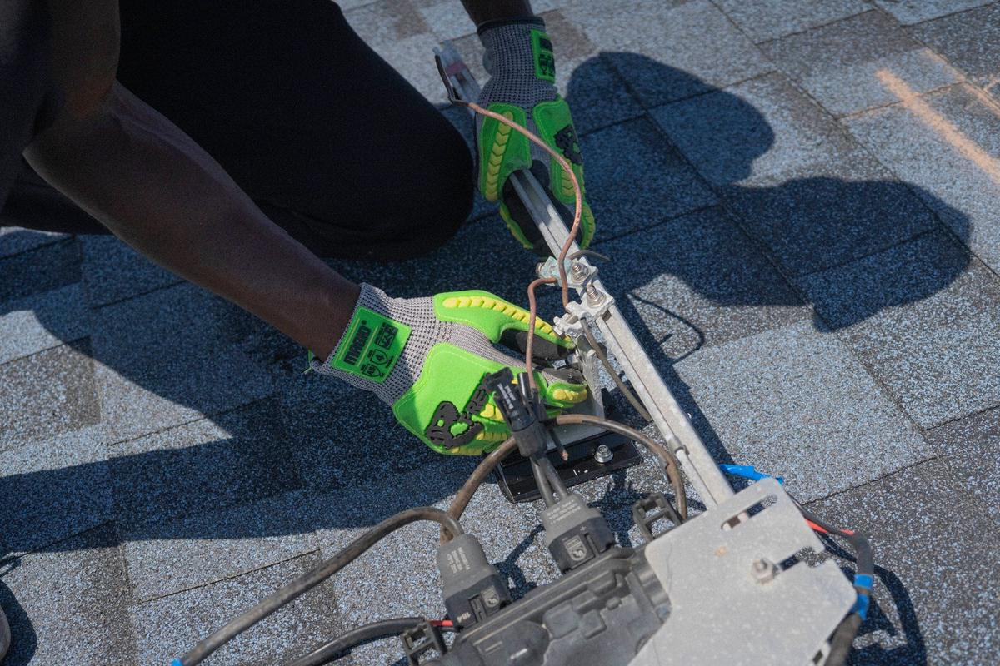

Buying roofing leads is a bit like buying a lottery ticket that four other roofers also bought. Someone wins. It is usually whoever picked up the phone fastest.
Roofers can buy leads, and some do well with them, but shared leads are sold to several companies at once, so you are paying to enter a race decided by speed and price. Most roofers do better treating bought leads as a top-up while they build two sources they own: their search ranking and their own storm list. The test is simple: cost per signed roof, not cost per lead.
How do shared roofing leads work?
A homeowner fills in a form on a lead website, usually something like "get three roofing quotes." The lead company sells that form to several roofers in the area. Each of them gets the same name and phone number within minutes, and they all start dialling.
That has three consequences. The homeowner gets a lot of calls very quickly, which they often did not expect. The roofer who reaches them first usually books the inspection. And the ones who come second and third are mostly competing on price, which is not the race a good roofer wants to run. It is also why so many bought leads end up in the pile we wrote about in leads that never answer the phone.
Are exclusive roofing leads worth it?
Often more than shared ones, because nobody else is calling. They cost more per lead, so ask three questions before you sign up:
- Where did the homeowner fill in the form, and what did the page promise them?
- Did they agree to be contacted by you, by name, and how? Calls and texts have consent rules, including the federal Telemarketing Sales Rule, and the person dialling is the one who carries the risk.
- What happens to a bad lead: a wrong number, a renter, someone outside your area? Get the credit policy in writing.
Google runs its own version, Local Services Ads, where you pay when a customer contacts you through the ad and the lead goes to you, not a list of five. For many roofers that is the first paid channel worth testing, because the homeowner chose your name from the listing.
For ninety days, write down what you spend on each lead source and how many roofs it signs. Say you spend $2,000 on leads in a month and sign two roofs: that source costs $1,000 per signed roof. Compare that number, not the price per lead, against your margin on a typical job.
What does a roofer's own lead source look like?

Three things you own, in rough order of how fast they pay:
- Past customers and referrals. The cheapest leads in the trade, and the ones most roofers ask for least. A short note after each job and a check-in after the next big storm cost nothing.
- Your own storm list. After hail, the homes that took the worst of it with the oldest roofs, called or knocked by a person on your team. Nobody sold that list to anyone else, because nobody sold it at all. We explain how it is built in what hail maps can and cannot tell you.
- Search. A Google Business Profile and website that rank for roofing in your towns, on the relevance and prominence signals Google describes in its local ranking guidance. Slowest to build, usually 60 to 90 days for first movement, and the only one that keeps working on a day you do nothing.
When does buying leads make sense?
When you have crews standing idle and need work this month, when you are entering a new town and have no reviews there yet, or when you have a fast, disciplined callback process that can actually win the race. It makes less sense as the whole plan, because the day you stop paying, the phone stops too, and nothing you bought made the next month easier.
If you do buy, set yourself up to win the race you are paying to enter. Someone answers new leads within minutes during the day, the first call says who you are and why you are calling, and every lead that does not pick up gets a second and third try over the next couple of days instead of being written off by lunchtime.
How Roof Command compares
Roof Command is not a lead service. There is nothing to share, because it is your own map: radar hail over every home in your service area, checked each morning, a Daily 50 call list and knock route for your team, every roof measured, and your name on everything that goes out. The full Local SEO package comes with it, so search keeps building underneath while the storm list works. A bought lead can still sit on top of that. It just stops being the only thing on the table.